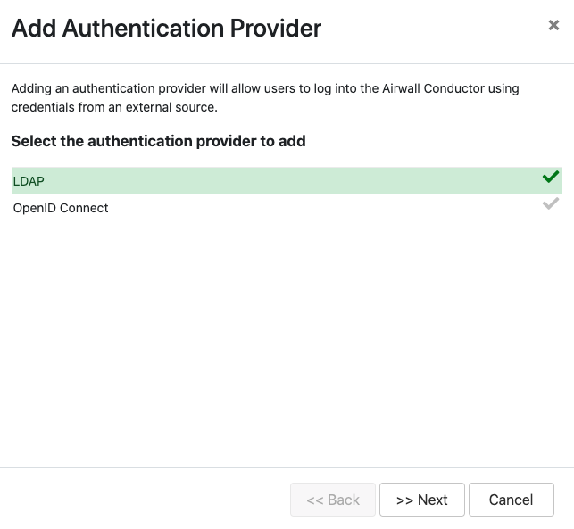
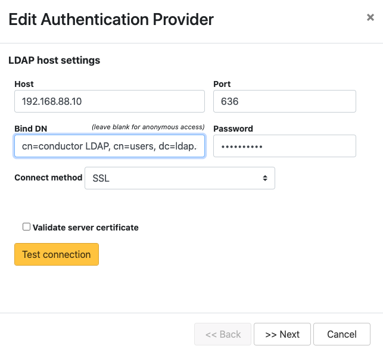
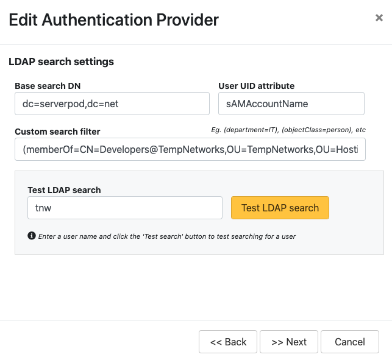
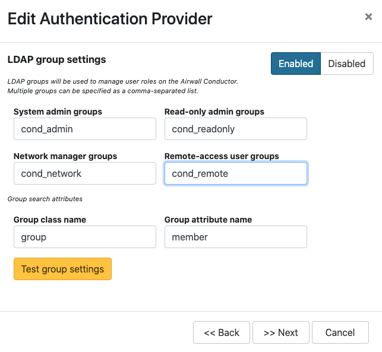
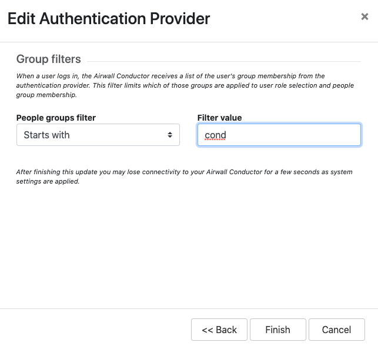
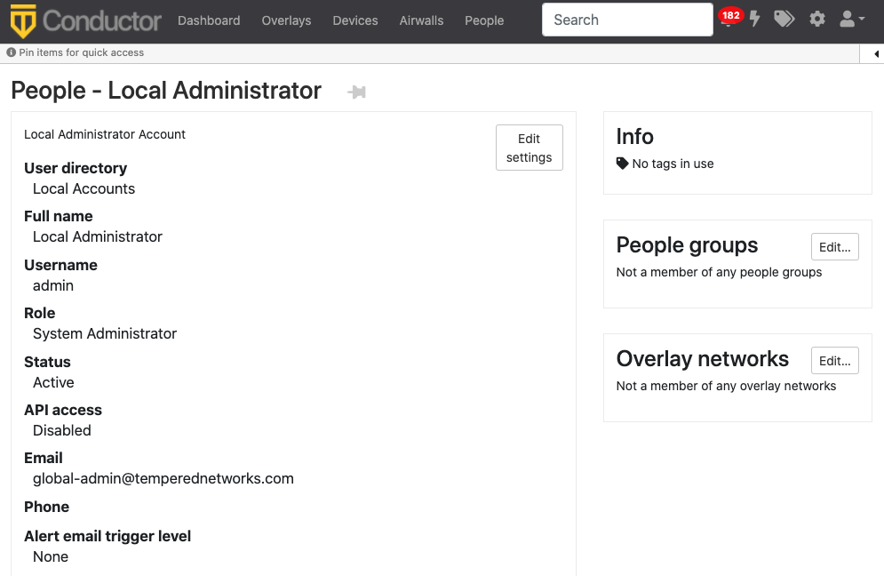
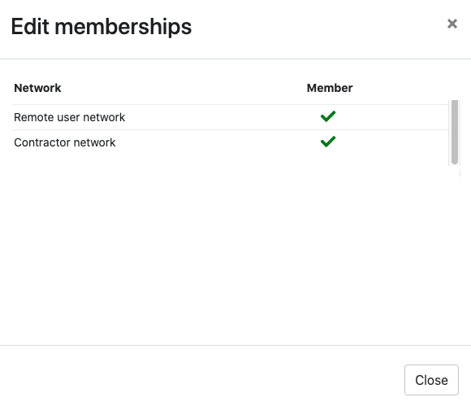
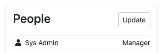
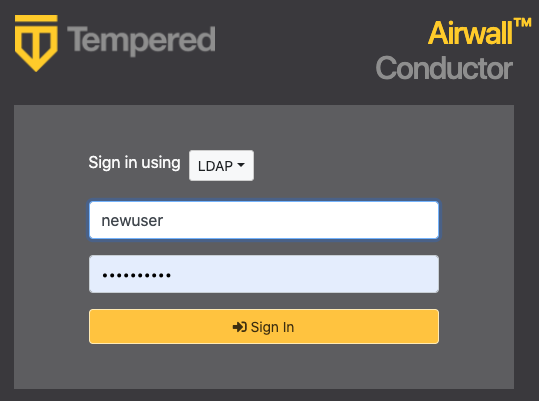

Configure LDAP authentication on Conductor and Airwall Edge Services
You can use Active Directory and LDAP authentication with the Conductor to streamline user account management. When LDAP is configured, users can choose to log in with an LDAP account on the Conductor login page.
There are currently three different ways to authenticate with Conductor.
- With a Conductor account. These are local accounts that log directly into the device
- With LDAP authentication. This allows you to authenticate with any LDAP server, including Microsoft Active Directory services.
- With a third-party authentication provider that supports OpenID Connect. See Integrate Third-party Authentication with OpenID Connect.
There are four different roles in the Conductor:
- System Administrator – These users have full access to the Conductor and can adjust any settings. Note that to edit LDAP settings, you must be logged in locally to the Conductor, not through LDAP.
- Read-only System Administrator – These users have read access to the Conductor, but cannot make changes.
- Network Administrator – These users have access to and can adjust any overlay network they are a manager of. They do not have access to Conductor Settings.
- Remote Access User – These users can only see their own information, and can log in with their credentials if authentication is required for their Airwall Agent or Server.
For more detailed role information, see Understand People Roles and Permissions.
Step 1: Set up and configure your LDAP server
LDAP is not enabled in Active Directory by default, so you will have to turn it on. Once you have LDAP working and running, you can start.
Step 2: Enter and verify your local Conductor admin account credentials, and select Authentication provider
- Log into Conductor locally (not through LDAP) as a System Administrator. (Only local administrators have access to authentication provider settings.)
- Open Settings, and next to Authentication, select Add Provider.
-
Select LDAP from the list of providers.

Step 3: Enter your LDAP settings
You will need to know the following values:
- Host (Hostname or IP address)
- Port (636 is the default)
- If you are using a dedicated LDAP service account, the fully-distinguished path for the user account, and the password

Step 4: Configure Search Settings
This page can mostly be left as-is, unless you have special settings you wish to set. You can search for user accounts here to ensure that the Conductor can search the directory. Select Next. For more details on these settings, see LDAP search settings.

You can test the search by entering a search term and selecting Test LDAP search.
Step 5: Configure Group Settings
The Conductor assigns LDAP users to one of the four account types above by making them a member of a security group.
- cond_admin – System Administrator
- cond_readonly – Read-only System Administrator
- cond_network – Network Administrator
- cond_remote – Remote Access User
Since users cannot have more than one role at a time, if they are members of multiple groups, they'll be assigned the role with the most permissions.
Remember to test the settings to ensure that Conductor can see all of the groups you reference on your LDAP server.
-
For LDAP group settings, enter the groups for the
roles you want LDAP users to have, and Group search
attributes, and select Next. For more
details on these settings, see LDAP group settings.

You can also add other security groups to the configuration, separated by commas.
Note: You can set up these groups on your LDAP server after setting up LDAP on the Conductor, but Test group settings will fail. -
For Group filters, enter filters to specify which
LDAP groups the Conductor sees. For example, if you've created the cond_ groups above, you may want
to set the filter to Starts with with a value of
cond.

-
Select Finish
You may lose connection briefly as the new settings are applied.
Step 6: Configure user onboarding
- In the Conductor, create People groups that match the LDAP groups you specified above (for example, cond-admin)
- Specify user onboarding options as you create the groups. For details, see Set up a People Group.
Step 7: Set up Conductor management access
You can also set up access for your Conductor system and network admins individually.
-
Add administrators to Overlays – Add administrators individually as members of Overlay networks to give them access to the resources they need. You can add them
from their People page, or from an Overlay page:
- From the person's People page, next to Overlay networks,
select Edit. Add the person as a member or
manager of Overlays.


- From the Overlays page, open the overlay, and under People, select Update. Add the administrators as
members or managers of the overlay.

- From the person's People page, next to Overlay networks,
select Edit. Add the person as a member or
manager of Overlays.
-
Add administrators to People groups – Similarly, you can add administrators to People groups, from their People page or add several administrators from the People
group:
- From a person's People page – Next to People groups, select Edit and select the People groups with the permissions they need.
- From a People group – Open the People group, and on the People tab, select the people to add.
Step 8: Verify by logging in to the Conductor
Verify that LDAP is set up by logging in and checking permissions.
- Log out from your local administrator account.
-
Next to Sign in using, select
LDAP, and log into the Conductor with an LDAP account.

- Check that permissions are set correctly for that user.
See also: Configure user authentication for Airwall Agents and Airwall Servers.